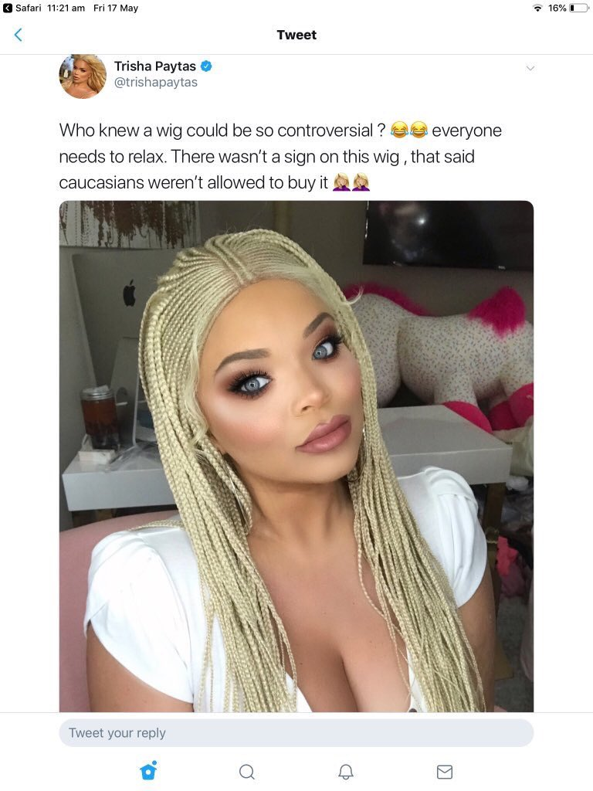
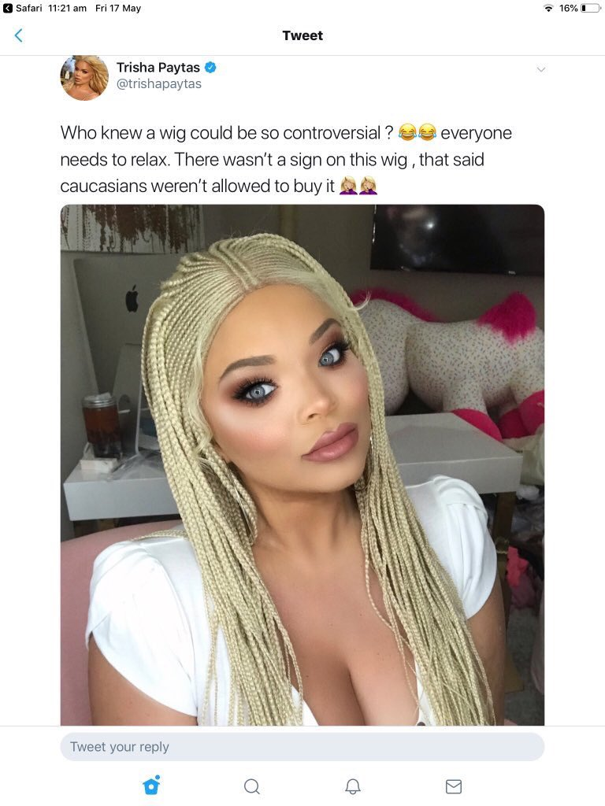

Paytas & White Men
Content Warning: Extreme Racism, Zoophilia, Sexual Assault, Violence
Paytas has maintained connections with numerous other YouTube stars, other white men who have said and done similar harmful actions as herself. While some of this may appear as petty drama or gossip, it’s important to remember that between Jeffree Star, Trisha Paytas, and Shane Dawson, there are a combined 42.5 million subscribers, and millions of dollars at stake — Jeffree Star earned 18 million in 2018 from YouTube alone. Additionally, these actions that these creators get ‘cancelled’ for range from dabbling in Nazism, modern minstrelsy, and promoting violence towards women of color to a young, impressionable audience of millions.
Shane Dawson
Jeffree Star
David Dobrik
Shane Dawson was one of the first YouTube creators, joining YouTube in 2008, with his three YouTube channels collectively amassing over 4.5 billion views today. His YouTube has demonetized indefinitely and his three books have been pulled from shelves following the unearthing of his earlier content regarding underage girls and zoophilia.
Trisha Paytas and Shane Dawson have been creating content together since 2014, even earning the nickname “Trane.” [1] Dawson begins collaborating with Jeffree Star in 2017, leading to Dawson’s docuseries on him in August 2018, “The Secret World of Jeffree Star,” and another in 2019, “The Beautiful World of Jeffree Star,” which documented their collaboration on a makeup palette for Star’s beauty brand, which included a hot-pink eyeshadow shade appropriately named “Trisha.” [2] After Star’s and Paytas’s fallout in July 2020, Dawson did not rebuke Star and appeared to maintain the friendship, though did not comment publicly. [3] Paytas seemed to fall out with Dawson over this, but October 7, 2021, Paytas announced via livestream that she supported Dawson’s return to YouTube, saying: "I think everyone makes mistakes. I think everyone deserves to be forgiven. I feel like, you know, everyone deserves second or third chances. As a public figure do you have to give that? No. If you don't like him, you don't like him but he has something that is just very charming and magnetic, and people like him.” [4]
“From the very beginning, the content that propelled Shane Dawson into fame was highly offensive.” [5]
In 2014, Shane Dawson issues his first official apology for his minstrel act, from his early years in YouTube, a character in blackface that used racial slurs named “ghetto-girl Shanaynay.” He also did other characters in this time, that include but are not limited to, “gangster S-Deezy,” “Barb the Lesbian,” and “Guadalupe/Fruit Lupe.” [6]
“I didn’t fuck my cat. I didn’t cum on my cat. I didn’t put my dick anywhere near my cat. I’ve never done anything weird with my cats.”
In 2019, Dawson was forced to make a statement vehemently denying any type of sexual contact with his cat, after a 2015 podcast clip of him was unearthed saying he had performed sex acts on his cat. 'One time, I laid my cat down on her back,' he said, before adding that he 'came all over her'. He claimed the story was fake, and originally started as a crude sketch idea.[7]
In July of 2020, Shane Dawson compiled a mass apology entitled "Taking Accountability."
In this apology video that garnered major backlash, Shane Dawson apologized for previous jokes about pedophilia, zoophilia, racism, and promoting homophobic tropes against James Charles. [8] (See the Dramageddon sticky note for more details) His jokes around pedophilia that came under fire included but were not limited to: describing a six year old girl as 'sexy,' (pretending to be a pedophile as a 'bit') [9] pretending to have sex with an eight year old puppet character, [10] and pretending to masturbate to a photo of Willow Smith, who at the time was 11. [11]
Jeffree Star is an American YouTuber, producing beauty content, and is the founder and owner of Jeffree Star Cosmetics. He joined YouTube in 2006. [1] In 2018, Star earned 18 million dollars from his YouTube endeavors alone. This section does not cover all of Star's racist and harmful actions; because his racist aggressions were so frequent, this section seeks to highlight the most prominent examples.
Paytas and Star first filmed a collaboration video in 2018, after Dawson partnered with him first in 2017. [2] In February of 2020, Paytas, Star and a couple others took a trip to Las Vegas during which Paytas claims Star admonished her for her weight and eating habits, and previous drug abuse. By September of that year, on the Frenemies podcast with Ethan Klein of H3H3, Paytas confirmed the end of the relationship with Star. [ibid] In early 2021, Star’s former stylist took to Instagram to call Paytas a ‘walrus,’ with ‘warts.’ Paytas revealed that same day that Dawson private told her that he would not admonish Star publicly, and would continue to host him on his podcast, resulting in Paytas blocking Dawson and his fiancé that day.
LipstickNazi.com
Sometime in the early 2000’s, Jeffree Star created a brand titled “Lipstick Nazi,” at LipstickNazi.com, apparently meant to refer to himself. [3]
Blood on the Dance Floor "Child Fucker"
Star defends Blood on the Dance Floor member Dahvie Vanity, who Star described as a “child fucker,” saying on twitter that people needed to “get over the negativity,” and promoted a Blood on the Dance Floor album. [4] Dahvie Vanity was later covered by Chris Hansen of to Catch a Predator, after which Star claimed he had no knowledge of Vanity’s actions. [5]
Continued Violence Against Women of Color
Footage dating to 2004 shows Star yelling racial slurs at women in the street. [6] Jeffree apologizes in a video entitled "RACISM." in 2017 and says: “I've called people stupid, I've called people rats, I've called people annoying, I've called people every name in the book when they've attacked me back because it's hard not to react sometimes." [7] Another presumed covered incident in his 2017 apology video is when he said, "Well maybe if she wasn’t wearing the wrong foundation I wouldn’t have to splash no battery acid. I wanted to lighten her skin tone," in reference to a black woman. [8]
David Dobrik started his internet career with overnight success on video-sharing app Vine, then transitioned to YouTube in 2015, as the leader of a YouTube ensemble entitled the Vlog Squad. His video content typically entailed pranks and various comedy bit characters. [1] In 2021, his net worth was estimated to be between $25 million and $34 million. [2]
Prominent vlog squad member Jason Nash began dating Trisha Paytas in the summer of 2017. [3] Paytas was frequently the target of Vlog Squad video content ‘pranks,’ or comedic bits, which traditionally ended with Paytas in tears or her being framed as philandering; Dobrik also captured some of the more serious relationship issues that came to light. [4] Another ‘comedy bit’ perpetuated by Dobrik and Nash was persuading then 20 year old Tana Mongeau to have a threesome with Paytas and Nash (Paytas was 30 at the time and Nash was 45); Paytas had clearly and repeatedly stated her discomfort with this ‘joke.’ [5] In May 2019, Nash and Paytas broke up, and she subsequently accidentally overdosed on pills and alcohol. [6] In August 2019, Paytas began making accusations against the Vlog Squad, including manipulation and sexual assault, but considering her own self ascribed label of ‘troll,’ the accusations were not taken seriously. But on the Frenemies podcast in 2020, hosted by Paytas and Ethan Klein of H3H3, Paytas’s accusations were validated when former members came on the podcast and confirmed her stories, including Seth Francois, former Vlog Squad member, alleging he was sexually assaulted and another describing the group dynamic as ‘cult-like.’ [7] [8]
“A woman featured on YouTube star David Dobrik’s channel says she was raped by a Vlog Squad member in 2018 the night they filmed a video about group sex.”
On March 16, 2021, Business Insider publishes an article regarding Dobrik’s 2018 video “SHE SHOULD NOT HAVE PLAYED WITH FIRE!!” in which a 20 year old woman, known as Hannah, claims that Vlog Squad member Dom Zeglaitis had sex with her while she was black-out drunk, off camera. Paytas backs up Hannah’s story, reporting that it was ‘a bad situation’ and another Vlog Squad member was instructed to purchase liquor for Hannah and her friends, who were underage at the time. [9] This was Zeglaitis’s third accusation of sexual assault. [ibid]
Following the publication of the article, Dobrik and Zeglaitis’s videos were demonetized on YouTube, and Dobrik lost sponsors such as SeatGeek, EA Sports, DoorDash, HBO Max, Facebook — and many more. Ethan Klein and Paytas hosted a livestream interviewing another Vlog Squad member, Jeff Wittek, who vehemently denied any involvement, but a time-stamped photograph, revealed later on the stream, showed him to be walking next to the victim who had to be held up by her friends. [10]
“Don’t Try This At Home”
On April 22, 2021, Jeff Wittek, a prominent Vlog Squad member, uploaded a documentary on an accident he suffered while filming a vlog for Dobrik. The vlog depicted the Vlog Squad wakeboarding on a shallow lake, with David Dobrik operating an excavator that pulled and maneuvered the wakeboard. “When Wittek tries wakeboarding, Dobrik swings him even higher, then abruptly stops, causing Wittek to crash into the machine, then into the water with his foot still caught in the line.” [11][12] Wittek has since filed a lawsuit for $10 million in damages to Dobrik, due to the gargantuan medical bills he has accumulated due to injuries from the incident, including but not limited to, breaking his foot and hip, shattering his skull in nine places, tearing a ligament in his leg, and almost losing an eye. [13]
Tati Westbrook publishes “BYE SISTER…” accusing James Charles of betraying her by promoting a rival hair vitamin company at Coachella, and accuses him of predatory behavior towards straight men. [1]
Westbrook alleged that Charles was using his newfound fame and money to pressure young straight men into having sexual relations with him; citing one experience with a waiter, Sam Cooke, but Sam Cooke later retracted the story and apologized to Charles. [2]
Jeffree Star joined the pile-on by announcing that James Charles was banned from his home for his predatory behavior, unbeknownst the public previously. He even goes on to claim that he has a voice recording from the victim. [3]
A year later, beauty YouTuber Kameron Lester discusses his experience with Jeffree Star, explaining that he witnessed Shane Dawson call Star and told him to “go in on” James Charles, three months before the publishing of “BYE SISTER…” [circa February 2019] [5]
After being replaced as a model for one of Star’s beauty campaigns, Lester says: “I felt like he was trying to send a message in some way that I was replaceable as a Black boy.”
This announcement would start the shift in the court of public opinion for Dawson and Star in the coming year. After this, rumors began circulating on Twitter that Dawson orchestrated Tati’s “BYE SISTER…” [6]
On June 30, 2020, Tati comes out with a video, entitled “BREAKING MY SILENCE…,” claiming that Star and Dawson manipulated her into posting the video and alleging that Charles sexually harassed straight men.
Westbrook claims that Dawson “used, coerced, and manipulated her,” into posting “BYE SISTER..” along with the help of Star; saying that Dawson even offered to help design the thumbnail and edit the script. [7]
"Over the course of the next few weeks, he [Dawson] and Jeffree fed me so much information that I felt sick. Almost every day there was more information and new allegations," Westbrook said. "Eventually I believed what they were saying because they said they had evidence. By the time the drama around James Charles' promotion of Sugar Bear Hair reached its peak, I was beyond gaslit.”
Dawson livestreams his reaction to Westbrook’s video with the allegations against him and Star, which only incurred more backlash.
He says, “You’re so manipulate, you’re fake crying. You are fake crying, that is not real. Oh my god.” [8]
The amount of backlash both Star and Dawson received after these events led to the unearthing of old actions, including but not limited to, racism, minstrelsy, zoophilia and pedophilia; eventually leading to the indefinite demonetization of their YouTube channels and the pulling of Dawson’s books off shelves in stores.
Paytas would continue to defend Dawson even after the fallout from Dramageddon.


 
